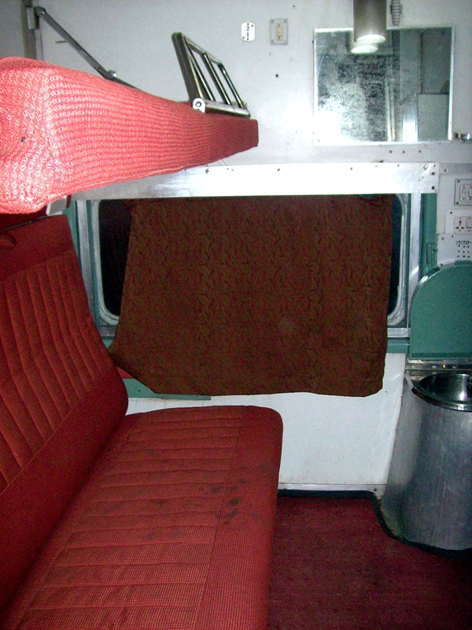
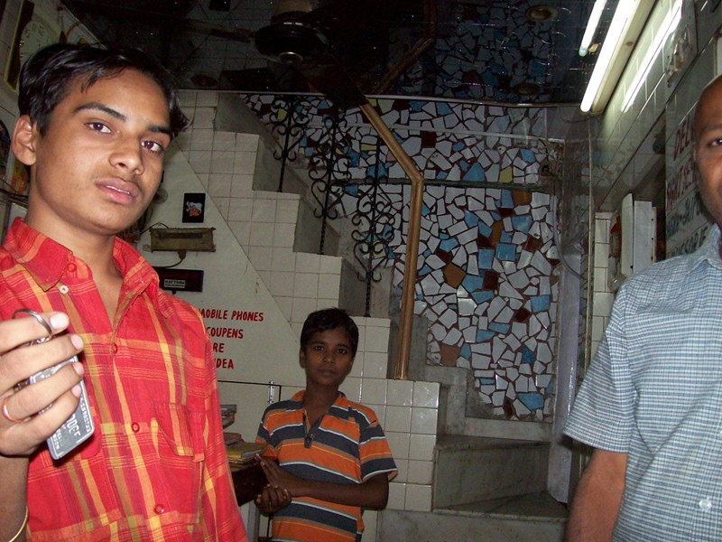
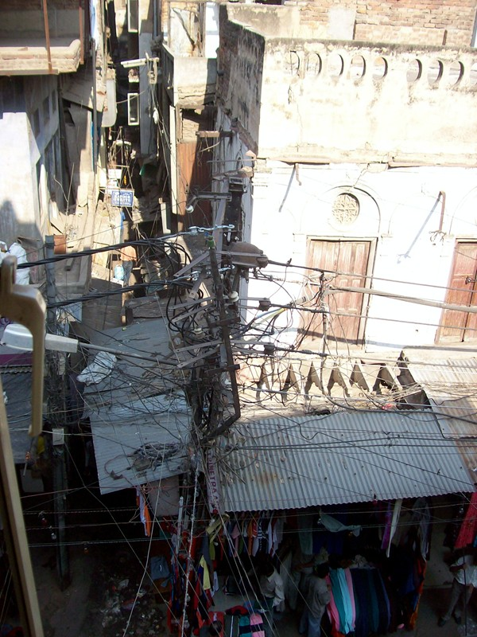
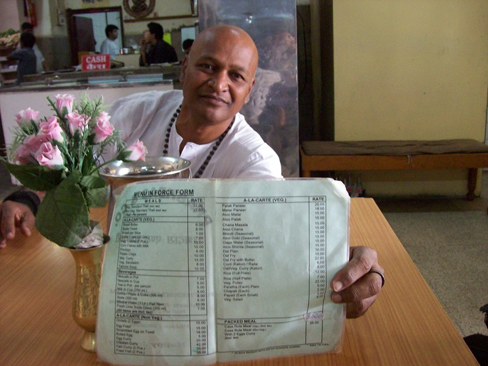
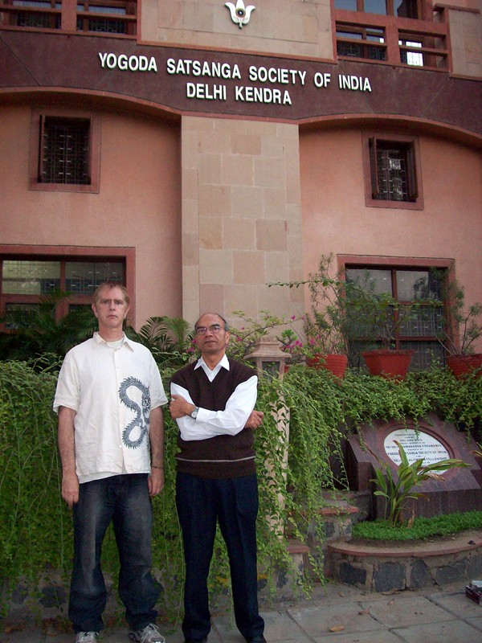

Delhi
I didn't plan to stay in Delhi. We were on an overnight train from Mathura to the Himalayas. My guru's guru's guru's guru actually did live in a cave in the Himalayas. I was also planning to see Ram Das's guru's ashram, which is on the way. Watching the shanties sprawling along the track, a blackness settled in. The night became rancid, oily, thick. Smoky fires burned; scarecrow children scavenged the filthy railroad tracks. Suddenly the squalor was overwhelming. I hated India. I wanted out. What I didn't know at the time was that I was running a high fever. Ravanna's Revenge had finally found me.

First class air conditioned train compartment. This is as good as it gets. Ram recommends booking a compartment one step down from the top, because this class may have been booked by a soldier, railroad official, or someone else who can smoke, drink and throw up with impunity.
We reached Delhi two hours late and missed the connection. I was bone weary. We found yet another substandard hotel and I crawled resentfully into bed. The shaking chills started soon after. It took me 1 1/2 hours to undress while laying in bed. (Bend knee to reach sock. Nearly pass out and rest 20 min. Pull sock.)

That night I started running to the toilet and missed 7 times out of 8. In the morning we had to change hotels for some reason. I got up and unexpectly hurled across the bedroom floor. Copiously. Twice. "All right," I thought, "You love filth, India? Here's your filth. Have a nice day!"
Downstairs, I confessed to Ram, who went racing up to find the cleaning boy standing in shock. Since Ram often stays there, he tipped the boy Rs. 35 not to tell the management. This generosity (the standard Indian tip for anything is Rs 10) worked. "These things happen," the boy said cheeerfully.

The view from my sickbed reminded me of my fully patched copy of WinXP.
The street below is Dehli's main bazaar, complete with bellowing hawkers the whole day long. The next day things got worse. It was Guru Nanak's (founder of Sikhism) birthday. Brass bands and trucks with speakers the whole day long.
Ram and I differed on the treatment. Ram viewed the symptom as the problem and prescribed constipating foods. I viewed dehydration as the problem, and Ram though drinking liquids absurd under the circumstances. We compromised; he brought all the Gatorade I asked for, and I ate all the dry toast he brought.
I tried postponing the flight back, which devolved into a typical India experience. None of the rickshaw guys had a clue how to get to the major street in New Delhi were the Qantas office is located. Navigation is the passenger's responsibility. Upon arrival, I found that Qantas doesn't take credit cards in India; the network connection is too unreliable. Then I found that I could leave one day sooner, but not three days later, which is the reverse of the way reservations normally work.
Credit cards are iffy in India. The only card that's universally accepted is Visa. No, that doesn't imply that they accept MasterCard as well. But Air Deccan only takes Visa cards issued in India. And Ram says that handing your card over to business that's not a major corporation is really stupid. It's a cash economy. For a tourist, things revolve around the ATM. They're not widespread, but there's one in, or within walking distance of, each airport. Your card unlocks the door to the machine.

Ram with the Menu In Force Form
Three days and 3.2 grams of norfloxacin later, I was able to get up and about. It was then that one of my moral failures occurred. Dragging myself through the bazaar, sucking on an orange Gatorade, I passed an exhausted, hungry-looking three year old girl who reached up for the Gatorade. I thought, "I'd like to get her one", and her mom jerked her away. Moments later, it struck me, why didn't I just give her mine? I could have gotten another one, and she's got to be immune to the germs. Opportunities to make some else's life better don't happen often enough, and I was asleep at the switch on this one.

Devinder and I at YSS New Delhi
The YSS (SRF in India) meditation center is across a bridge in New Delhi, which has car-sized streets and modern buildings. I hooked up with a friend from the Canberra Centre for dinner, who was visiting relatives. If you want a surreal experience, sit in a restaraunt in New Delhi and listen to Steve Irwin come out of Devinder Sharma's mouth. I wanted to shake him and scream "Please sound like you look!"
I told everyone I planned to get sick in India and lose 20 lbs (10 kg). Made it half-way with a little help from my protozoan friends. Got suspicious when I was still having symptoms, including total loss of apetite, a week after the trip. My Indian travel doc in Canberra confirmed I'm a G-Unit (giardia lamblia). "Hey little buddies," I told 'em, "If I don't eat, you don't eat!" They survived the 4g of tinidazole, so will have to go on long-term treatment when I get back to VA. (It's cool hosting an organism discovered by the inventor of the microscope in the 1600s, though.) We say hi. (Back in Virginia: They seem to have survived the piddly 2g dose that's the US standard treatment. My doctor has delayed for a week in calling me with the lab results. I think he doesn't want to tell the know-it-all patient that he was right. )